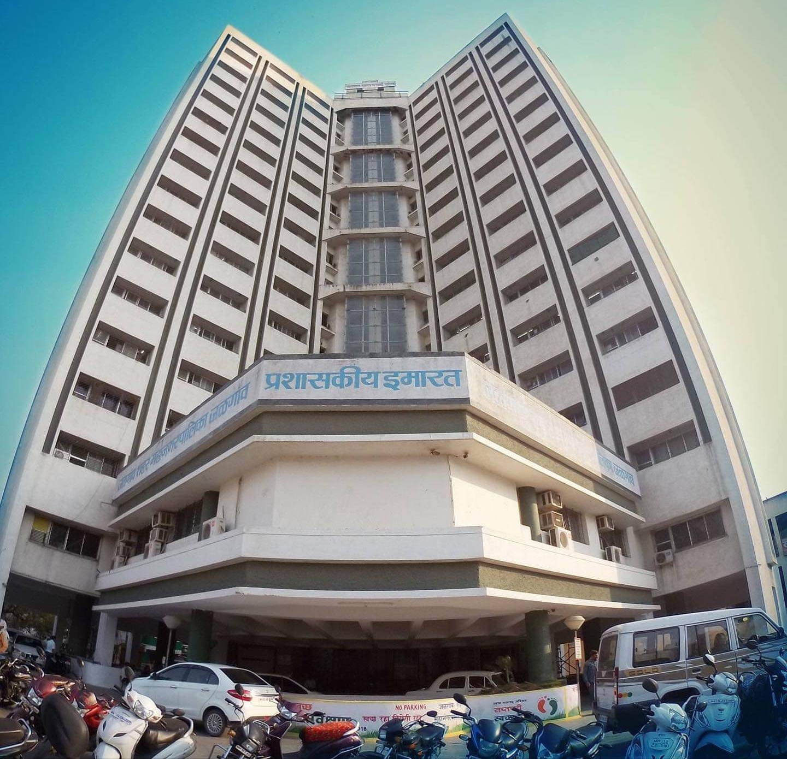

HomePage
About
Collage
Hobbies
Contact
Home Town 
Jalgaon is Banana City

Jalgaon District is located in the north-west region of the state of Maharashtra.
It is bounded by Satpuda mountain ranges in the north, Ajanta mountain ranges in the south.
Jalgaon is rich in volcanic soil which is well suited for cotton production.
It is a major business center for tea, gold, pulses, cotton and bananas. Languages spoken
are Marathi, Ahirani, Hindi, and English.Jalgaon District receives an average rainfall of about
690 mm and the temperature varies from 10 to 48 degree Celsius.
Jalgaon has got pretty diverse climate.